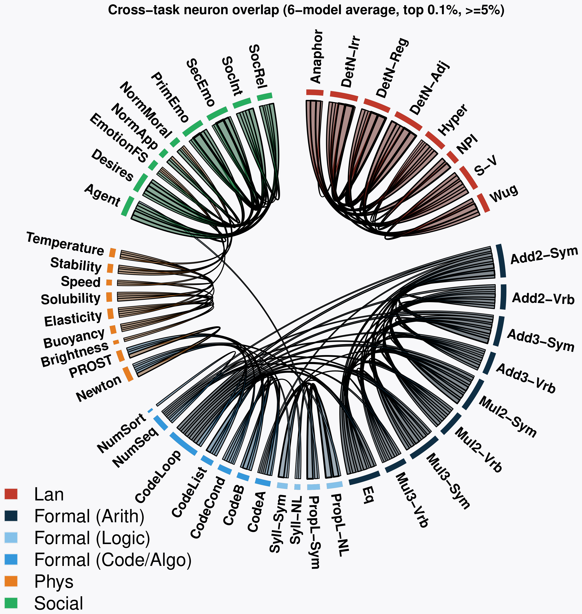
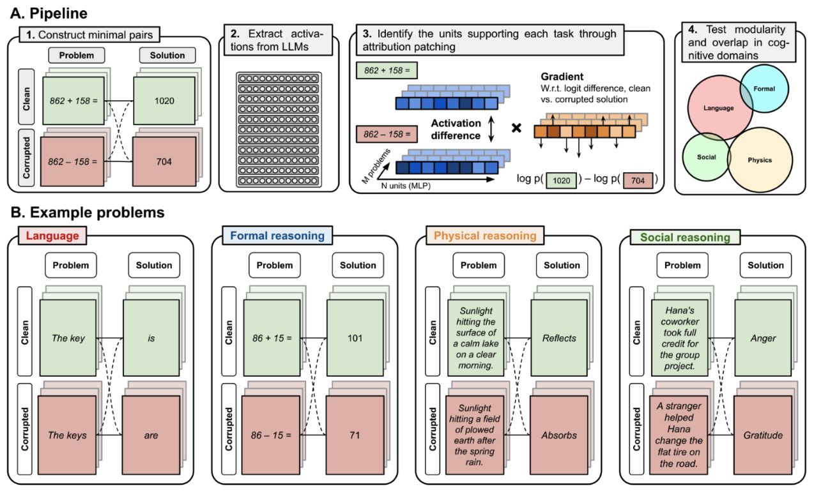
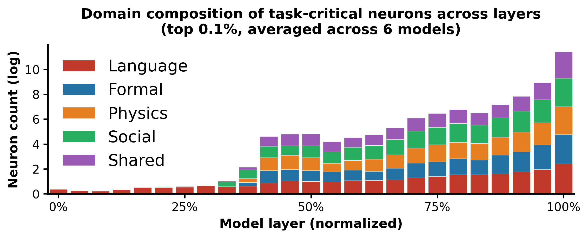
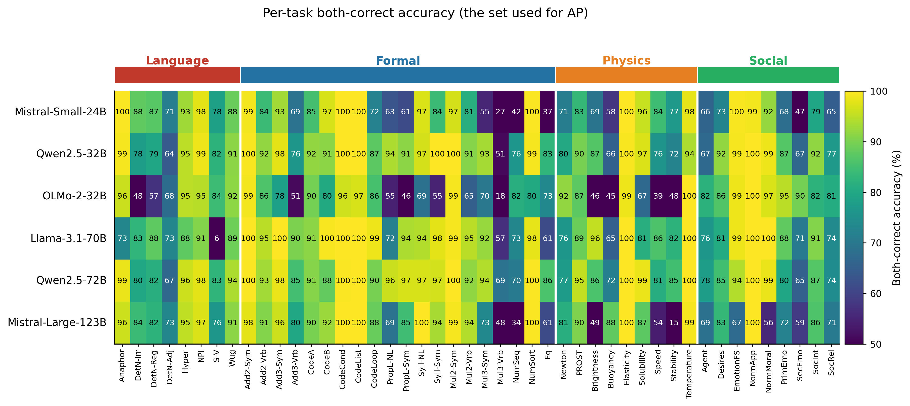

Massachusetts Institute of Technology
Preprint · 2026
The human brain exhibits a striking degree of functional specialization, with distinct networks supporting language, formal reasoning, reasoning about other minds, and reasoning about the physical world. Is this modular organization a fundamental principle of how intelligent systems must be built, or an evolutionary accident specific to biological brains? Here, we test whether a similar organization emerges in Large Language Models, another class of intelligent systems that emerged through a very different optimization process. Using circuit analyses across N = 46 tasks spanning four cognitive domains (language, formal reasoning, social reasoning, physical reasoning), we find that LLMs develop a modular architecture that mirrors the human brain: tasks drawing on the same network in humans recruit overlapping units in LLMs, whereas tasks drawing on different networks recruit separate units. The convergent emergence of modularity in biological and artificial systems suggests it reflects a general principle of the organization of intelligence.

We localize task-supporting units with attribution patching. For each of 46 tasks across four cognitive domains we build minimal clean/corrupted input pairs whose correct continuation flips; a unit's importance is its clean-vs-corrupted activation difference times the gradient of the clean−corrupted logit difference, summed over examples. We then quantify modular organization from the pairwise overlap of each task's top-0.1% units, and validate it causally by ablating those units and measuring cross-task transfer. Six instruction-tuned LLMs (24B–123B, four families) are analyzed.

Averaged across six models, within-domain neuron overlap exceeds cross-domain overlap by more than fourfold (12.9% vs 3.0%, permutation test p < 0.0001). Unsupervised hierarchical clustering of the 46×46 task matrix recovers the four predefined cognitive domains (Adjusted Rand Index = 0.78, p < 0.0001), and the overlap structure is highly consistent across models (mean pairwise Kendall's τ = 0.70 ± 0.06). The domains are active in the same mid-to-late layers but rely on largely non-overlapping units.

To test causal specificity, we ablate the top-0.1% units identified for a source task and evaluate the model on a different target task. Within-domain ablations cause a 25.9% accuracy drop versus 2.5% for cross-domain ablations (ratio 10.3×, p < 0.0001), consistent across models (Kendall's τ = 0.59 ± 0.05). The asymmetry holds for every domain individually and in both directions of cross-domain ablation.
The modular organization is not an artifact of the datasets, the contrastive design, or the attribution pipeline. Running the identical pipeline on GPT-2-small (124M) — which performs the reasoning tasks well below chance and is competent only on Language — recovers within-domain organization only in the Language domain, and far more weakly than in any large model. Modularity emerges only where the model has actually acquired the competence.

A class of intelligent systems shaped by an entirely different optimization process — gradient descent on next-token prediction — develops the same broad modular organization that characterizes the human brain: language, formal reasoning, social reasoning, and physical reasoning are each supported by largely distinct populations of units. Because the pressures usually invoked to explain cortical modularity (metabolic cost, wiring length) do not apply to a transformer, this convergence suggests that modularity reflects a general principle of how intelligent systems become organized when many forms of reasoning must be applied to the same input without interfering with one another.
@article{modularity_llm_2026,
title = {Emergence of a Human-like Modular Cognitive Architecture
in Large Language Models},
author = {TBD},
journal = {Preprint},
year = {2026},
note = {Citation and links to be finalized upon publication}
}